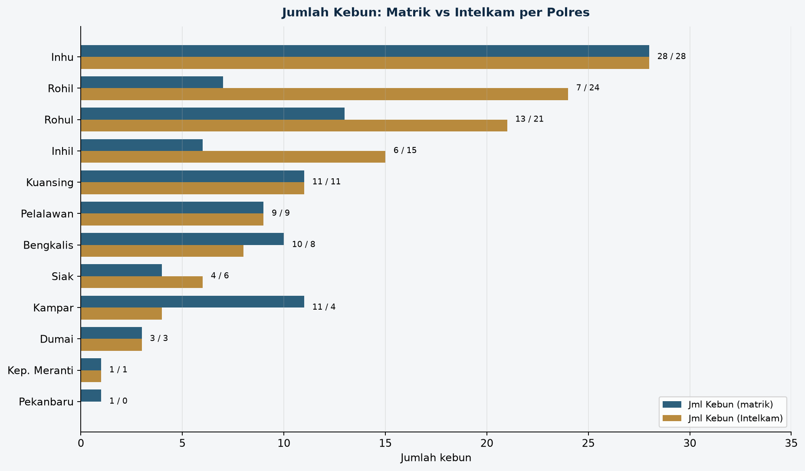
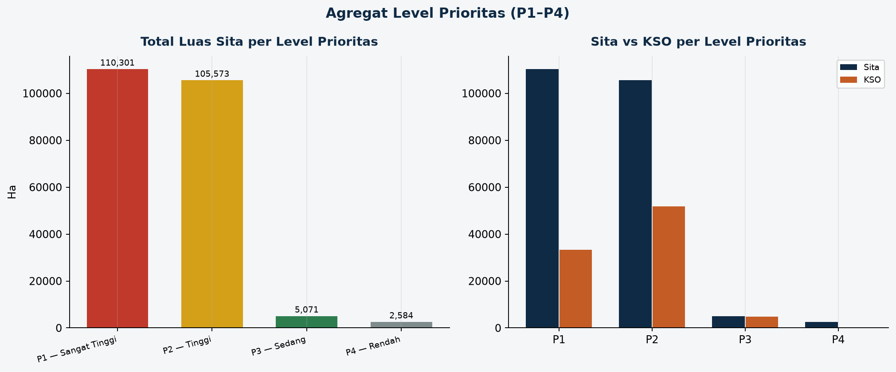

Grafik Tabel Prioritas Polres
Unit II Harda · Ditreskrimum Polda Riau · IDENTITAS + VOLUME KEBUN & LUAS
fig skor risiko polres
fig luas sita vs kso
fig pct kso vs sita

fig kebun matrik vs intelkam
fig dashboard prioritas polres

fig agregat level prioritas